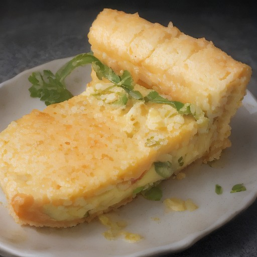

デザート
悪魔的なサーモン＆アボカドのカリッとしたチーズケーキ！

サーモンとアボカドの、カリッとしたチーズケーキ風、悪魔的な美味しさ！見た目は普通のチーズケーキだけど、口にした瞬間、一体感が爆発！
💡 こんな時・こんな人におすすめ！
特別な日のディナーに、あるいは特別な人へのプレゼントに！
📋 必要な材料（ポストイット風）
材料リスト 1
- サーモン150g
- アボカド1個
- チーズ100g
材料リスト 2
- 小麦粉50g
- 卵1個
🍳 作り方ステップ
1
サーモンを細かく刻み、アボカドはすり潰します。
2
チーズを細かく刻みます。
3
卵を混ぜ、小麦粉を少しずつ加えながら生地を捏ねます。
4
生地を18cmの型に流し込み、170度に予熱したオーブンで15分焼く。
5
焼き上がったチーズケーキは、冷ましてからカットします。